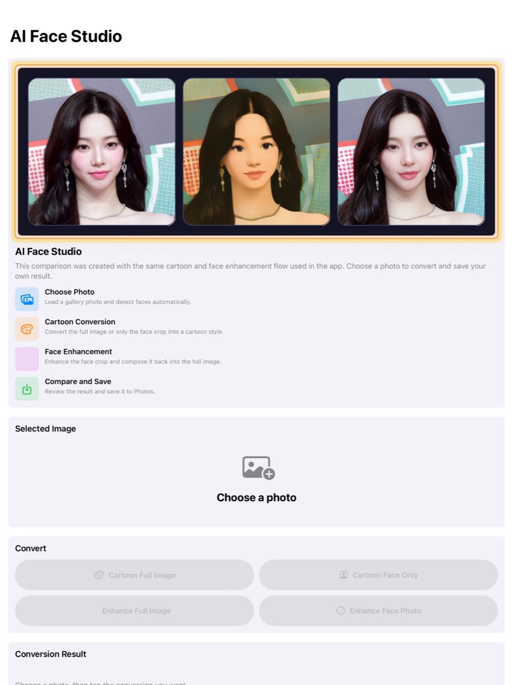
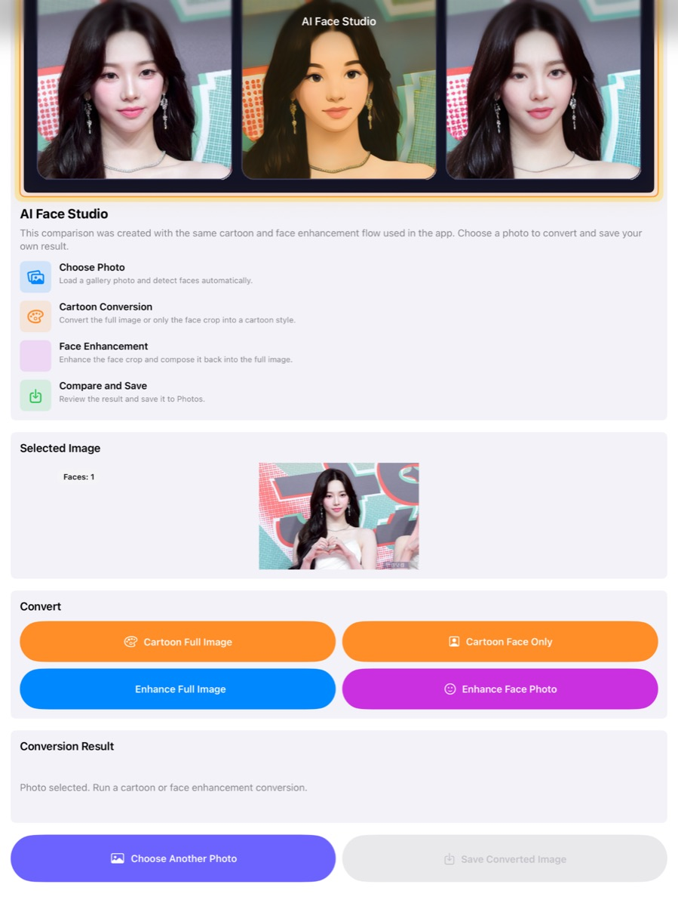
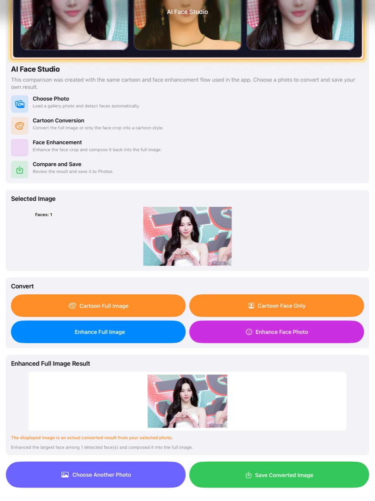
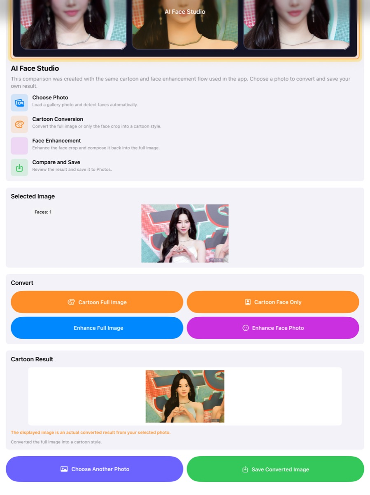

English
AI Face Studio helps users create fun cartoon-style photos and cleaner face-enhanced results from a single image. With a simple workflow—choose a photo, run conversion, compare the result, and save—it is designed for casual creators who want fast, polished image effects.
한국어
AI Face Studio는 한 장의 사진으로 카툰 스타일 변환과 얼굴 개선 결과를 빠르게 만들 수 있는 앱입니다. 사진 선택 → 변환 실행 → 결과 비교 → 저장의 간단한 흐름으로 누구나 쉽게 사용할 수 있습니다.
Choose a photo, run one of four actions, and save the result in just a few taps.
Prepared screenshot assets and product messaging for both Korean and English App Store listings.
Supports full-image cartoon conversion and face-only conversion workflows.
Lets users preview the generated result before saving to Photos.



